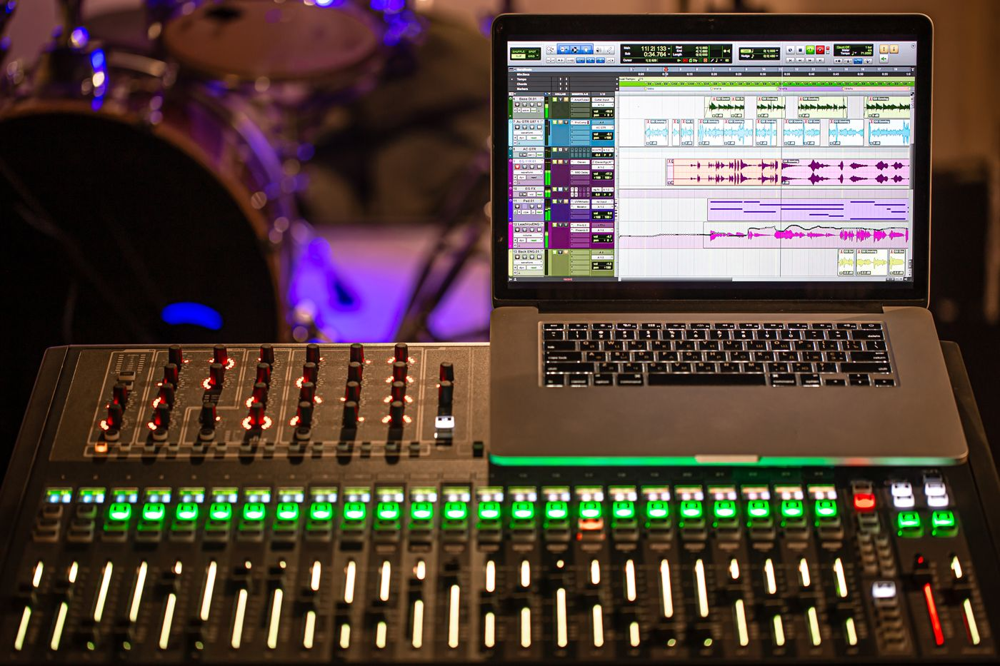

O que é o click
Click é uma sequência de batidas que marca o tempo da música, como um metrônomo. Nas multitracks, ele costuma vir numa faixa à parte, para tocar só no fone dos músicos, sem sair no som da igreja.

Por que usar o click
- Andamento firme. A música não acelera nem arrasta durante o culto.
- Entradas certas. Fica fácil voltar depois de uma pausa ou de uma parada.
- Ensaio em casa fiel. Quem estuda sozinho treina no mesmo tempo da banda.
A grade do click no Louvor Studio
Quando a multitrack tem uma faixa de click, o estúdio do Louvor Studio detecta os tempos e desenha a grade: linhas sobre as faixas e a régua, com os compassos. A grade não depende de um BPM fixo: ela acompanha cada batida do click, inclusive em músicas que mudam de andamento. Também é possível escolher qual faixa é o click.
Com a grade, você marca as partes e os trechos para repetir exatamente no começo dos compassos. Veja como dividir a música em partes.
Dicas
- Ouça o click só no fone, no ensaio em casa, para não competir com os outros instrumentos.
- Se a música for nova, treine primeiro sem click e depois com ele.
- Se achar o click difícil, reduza o andamento e suba aos poucos.
Perguntas frequentes
A banda precisa tocar com click?
Não é obrigatório, mas ajuda muito quando a banda toca junto com a multitrack, porque tudo fica no mesmo tempo.
O que acontece se a multitrack não tiver click?
Você ensaia normalmente. Só não aparece a grade do click; as partes podem ser marcadas à mão.
A grade serve para músicas que mudam de andamento?
Sim. A grade segue cada batida do click, e não um andamento único.